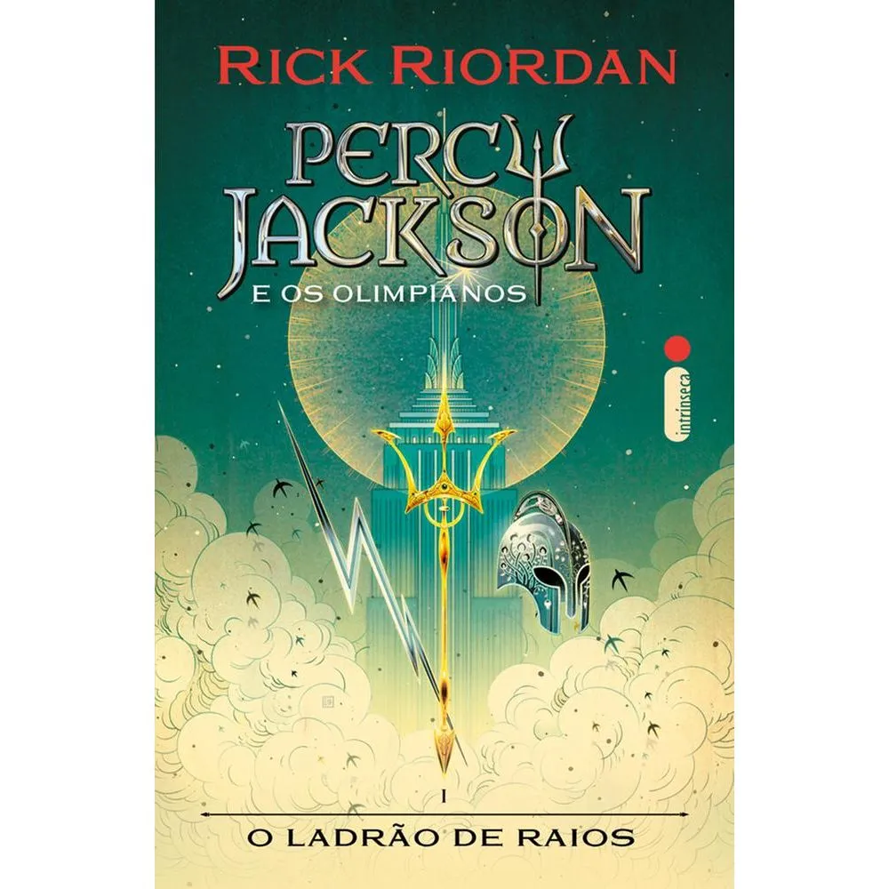

Autor: Rick Riordan
Sinopse: O livro acompanha Percy Jackson, um garoto que descobre ser filho de um deus grego. A partir disso, ele embarca em uma aventura repleta de perigos e criaturas mitológicas.
Minha opinião: Esse livro me surpreendeu porque consegue misturar aventura, humor e mitologia de uma forma muito interessante. Gostei de acompanhar a jornada de Percy enquanto ele descobria mais sobre sua origem e enfrentava diversos desafios. a leitura e dinâmica e prende a atenção do começo ao fim. Além disso, aprendi várias curiosidades sobre mitologia grega de uma forma divertida e emocionante